已经被证明是正确的。如今，这一结论不仅被普遍纳入数字领域，而且“之”字形和对角线的证明过程被普遍认为是整个数学中最精彩的证明之一。大卫·希尔伯特说：“在康托尔为我们创造的天堂里，没有人能把我们赶出去。”
已经被证明是正确的。如今，这一结论不仅被普遍纳入数字领域，而且“之”字形和对角线的证明过程被普遍认为是整个数学中最精彩的证明之一。大卫·希尔伯特说：“在康托尔为我们创造的天堂里，没有人能把我们赶出去。”几年前，在康奈尔大学任教的达伊纳·泰米纳（Daina Taimina）斜倚在纽约伊萨卡家中的沙发上，家人问她在研究什么。
“我在用钩针编织双曲平面。”她回答，她提到的这个概念，在近两个世纪中一直让数学家困惑并着迷。
“你见过数学家做钩针吗？”她得到了一个不屑的回答。
然而，这种粗暴的回绝让达伊纳更加坚定了利用手工艺品来促进科学发展的决心。她也是这样做的，她发明了“双曲钩针”，这是一种环绕纱线的方法，可以制造出WI（妇女协会）公司生产的那种复杂而美丽的物品，这也有助于以一种数学家从未想过的方式理解几何学。
我稍后将介绍“双曲”的详细定义，以及达伊纳的钩针模型得到的发现。但在这里，你只需要知道，双曲几何是一种完全反直觉的几何学，它在19世纪早期出现。在双曲几何中，欧几里得在《几何原本》中制定的一套规则被认为是错误的。“非欧几里得”几何学（简称非欧几何）是数学的分水岭，因为它描述的物理空间理论完全违背了我们对世界的经验，它难以想象，但它在数学上并不自相矛盾，因此它与之前的欧几里得体系同样有效。
同样在19世纪，格奥尔格·康托尔（Georg Cantor）后来也取得了具有类似意义的突破，他颠覆了我们对无穷大的直觉理解，证明了无穷大有不同大小。非欧几何和康托尔的集合论是通往两个奇异世界的大门，我将在接下来的篇幅中拜访这两个世界。可以说，它们共同标志着现代数学的开端。
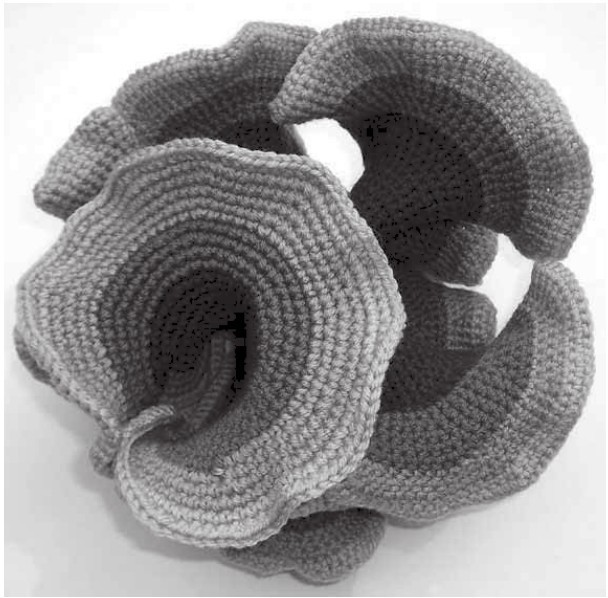
图11-1 双曲钩针编织品
让我们重新回顾一下很早之前提到的内容：《几何原本》是有史以来最有影响力的数学教科书，它阐述了古希腊几何学的基础。它还建立了公理化方法：欧几里得首先明确定义了使用的术语和遵循的规则，然后以此为基础建立起一个定理体系。一个系统的规则（或者叫公理）是可以无须证明就被接受的事实，因此数学家总是试图使它们尽可能简单直白。
欧几里得仅用5条公理就证明了《几何原本》中总共465条定理，这5条公理通常被称为5个公设：
1. 任意两点之间有一条直线。
2. 任意直线上可以产生线段。
3. 给定任意圆心和半径，可以画出一个圆。
4. 所有直角都相等。
5. 如果一条直线与两条给定的直线相交，使同一侧的内角之和小于两个直角之和，则这两条给定的直线必定在内角之和小于两个直角的那一侧相交。
看到第五公设，我们会感觉有些不对劲。这几条公设一开始非常简洁，前四条简单易懂，易于接受。但第五条为什么出现在这里？这条公设冗长而复杂，而且并没有非常直白。它甚至并没有那么根本，《几何原本》中到命题29才第一次用到了它。
尽管数学家欣赏欧几里得的推演方法，但他们厌恶他的第五公设。这不仅违背了数学家的审美，而且他们认为第五公设假设的成分太多，无法成为一则公理。事实上，两千年来，许多伟大的思想家试图改变第五公设的位置，他们想依据其他公设推导出第五公设，让它变成一则定理，而不是继续作为一条公设或公理存在。但没有人取得成功。也许证明欧几里得的才智的最明显证据就是，他发现第五公设必须在不用证明的情况下被接受。
数学家设想用不同术语重新表述这一公设，并取得了很大的成功。例如，17世纪的英国人约翰·沃利斯发现，保留前四条公设不变，用以下表述替代第五公设，《几何原本》的所有内容也都可以被证明。这一表述就是，给定任意三角形，它可以被放大或缩小到任意大小，而边长的比例保持不变，两边之间的夹角也不变。深入思考，我们会认识到第五公设可以被重新表述为关于三角形的陈述，而非关于直线的陈述，但它并没有解决数学家的担忧，因为沃利斯的公设也许比第五公设更直观（尽管也许只是略微更加直观），但它仍然不像前四条公设那样简单明了。数学家们还找到了第五公设的其他说法：如果第五公设被替换为三角形中的内角之和是180度，或者毕达哥拉斯定理，或者所有圆的周长与直径之比都是π，欧几里得的定理也仍然成立。虽然每句话听起来都不一样，但这些陈述在数学上都是可以互换的。然而，最便利地表达了第五公设本质的等价说法涉及平行线的行为。从18世纪开始，研究欧几里得的数学家开始倾向于使用这个版本，也就是所谓的平行公设：
给定一条直线和直线外的一点，最多有一条直线通过该点与原来的直线平行。
可以证明，平行公设指的是两种不同类型的面，它取决于“最多有一条直线”这几个字，这是一种数学的说法，表示“要么有一条直线，要么没有直线”。第一种情况如图11-2所示，对于任意一条直线L和点P，只有一条平行于L的直线（标记为L’）通过点P。这种平行公设的情况适用于最明显的一类面，也就是平面，比如你桌子上的一张纸。
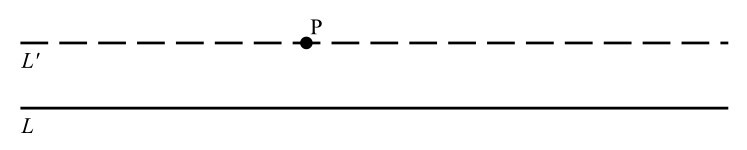
图11-2 平行公设
现在，让我们设想这条公设的第二个版本，那就是，对于任意直线L和线外的一点P，没有通过P的直线平行于L。乍一看，很难想象这可能是一种什么类型的面。它究竟在哪里？就在地球上！例如，假设我们的直线L是赤道，而点P是北极。穿过北极的所有直线都是经线，比如格林尼治子午线，所有经线都和赤道相交。所以，没有一条穿过北极的直线与赤道平行。
平行公设为两种面提供了几何学描述，它们分别是平面和球面。《几何原本》研究的是平面，因此两千年来，平面一直是数学研究的主要焦点。像地球这样的球面对理论学家的吸引力远不如对航海家和天文学家的吸引力。直到19世纪初，数学家才发现了一个更广泛的涵盖了平面和球面的理论，他们遇到了第三种面——双曲面。
一些人试图利用4条公设来证明平行公设，从而表明它根本不是一条公设，而是一则定理，其中最坚定的代表是来自特兰西瓦尼亚的工程学本科生亚诺什·鲍耶（Janós Bolyai）。他的数学家父亲法尔卡斯（Farkas）从自己失败的尝试中认识到了这个挑战有多么艰巨，并恳求儿子停止：“天啊，求你了，放弃吧。像惧怕爱一样惧怕它吧，因为它也可能占用你所有的时间，剥夺你的健康、心灵的安宁和生活中的幸福。”但亚诺什固执地无视父亲的建议，这并不是他唯一的叛逆之举，因为亚诺什认为这条公设可能是错误的。《几何原本》之于数学，就像《圣经》之于基督教一样，那是一本包含着不可挑战的神圣真理的书。虽然第五公设是公理还是定理仍有争议，但没有人鲁莽地认为它实际上可能并不正确。而事实证明，这种做法打开了一个新的世界。
平行公设指出，对于任意给定的直线和直线外的一点，最多有一条平行线穿过该点。亚诺什大胆地提出，对于任何给定的直线和直线外的一点，有不止一条平行线穿过该点。尽管当时他还不清楚如何视觉化地呈现出使这种陈述成立的面，但亚诺什意识到，这一陈述连同前面4条公设所创造的几何学，在数学上仍然具有一致性。这是一个革命性的发现，他认识到这一发现意义重大。1823年，他写信给父亲说，“我凭空创造了一个新的宇宙”。
亚诺什之所以有这样的见解，可能得益于这样一个事实，那就是他不从属于任何一个主要的数学机构，很少被灌输传统的观点。即使取得了这个发现，他也不想成为数学家。毕业后，他加入了奥匈帝国军队，据说他是所有同僚中最出色的剑客和舞者。他也是一位杰出的音乐家，据说他曾经挑战了13位军官，与他们决斗，条件是如果胜利，他要用小提琴为失败者演奏一段曲子。
亚诺什不知道的是，在一个比特兰西瓦尼亚更加远离欧洲学术中心的地方，另一位数学家也独立地取得了类似的进展，但他的工作被数学机构拒稿了。1826年，俄国喀山大学教授尼古拉·伊万诺维奇·罗巴切夫斯基（Nikolai Ivanovich Lobachevsky）向国际知名的圣彼得堡科学院提交了一篇论文，对平行公设的正确性提出了质疑。这篇论文被拒绝了，于是罗巴切夫斯基决定将它交给当地报纸《喀山信使》发表，结果并没有人注意到。
然而，在有关欧几里得第五公设从不可动摇的真理地位上被推翻的故事里，最大的讽刺是，早在几十年前，就有数学界的核心人物做出了与亚诺什·鲍耶和尼古拉·罗巴切夫斯基相同的发现，但是这个人却对同行隐瞒了他的结果。当时最伟大的数学家卡尔·弗里德里希·高斯为什么决定不公布有关平行公设的研究成果，这一点至今仍令人疑惑不解，但人们普遍认为，他不想被卷入教职员工之间有关欧几里得的卓越地位的纷争。
1831年，亚诺什的父亲法尔卡斯在一本书中以附录的形式发表了亚诺什的研究，读到这些结果后，高斯才向别人透露，他也曾考虑过平行公设是错误的。他写了一封信给自己的大学同学法尔卡斯，称亚诺什是“一流的天才”，但他表示自己无法称赞他的突破：“因为称赞这一突破，其实就是自夸。这篇论文的全部内容……与我自己的发现完全一样，其中一部分可以追溯到30到35年前……我本来打算以后把它们都写下来，这样它至少不会跟着我一起消失。现在免了我的麻烦，因此这对我来说真是一个惊喜。我特别高兴的是，在这件事上，是我的老朋友的儿子比我先做到了。”亚诺什得知高斯最先得出了证明的时候，他非常沮丧。几年后，当亚诺什发现罗巴切夫斯基也比他更早证明时，他产生了一种荒谬的想法，认为罗巴切夫斯基是高斯虚构出来的人物，这是为了剥夺他的研究功劳的诡计。
高斯对第五公设研究的最后一个贡献出现在他去世前不久，当时他已经病入膏肓。27岁的伯恩哈德·黎曼（Bernhard Riemann）是高斯最聪明的学生之一，高斯将黎曼的见习演讲题目定为——“关于几何学基础的假设”。黎曼是一位路德教会牧师的儿子，性格极度内向，起初黎曼有点儿崩溃，不知道要说些什么，但是，他对这个问题的解答将彻底改变数学，后来也彻底改变了物理学，因为爱因斯坦需要用黎曼的创新来阐述广义相对论。
黎曼1854年的演讲加深了我们对几何学的理解的转变（由平行公设的倒塌导致），建立起了一个包含欧氏几何和非欧氏几何的全面理论。黎曼理论背后的关键概念是空间的曲率。当一个表面的曲率为零时，它是平的，也叫作欧几里得面，这时《几何原本》中的结果都成立。当一个表面具有正曲率或负曲率时，它是弯曲的，也叫作非欧几里得面，《几何原本》中的结果也不再成立。
黎曼继续解释道，理解曲率的最简单的方法是考虑三角形的特性。在曲率为零的面上，三角形的内角之和等于180度。在具有正曲率的面上，三角形的内角之和大于180度。而在曲率为负的面上，三角形的内角加起来小于180度。
球面的曲率是正的。我们可以通过考虑图11-3中三角形的内角之和发现这一点。图中这个三角形由赤道、格林尼治子午线和西经73度的经线（这条经线穿过纽约）构成。两条经线与赤道相交的两个角都是90度，所以这三个角的总和一定大于180度。什么样的面具有负曲率？换句话说，哪里有内角之和小于180度的三角形？打开一包品客薯片你就能看到了。在薯片的鞍形部分画一个三角形（可能会抹掉法国黄芥末），见图11-4，相比于我们在球面上看到的“鼓出来”的三角形，这个三角形看起来像是“被吸进去”的一样。它的内角之和显然小于180度。
具有负曲率的面被称为双曲面。所以，品客薯片的表面是双曲面。但品客薯片仅仅是理解双曲几何的餐前开胃菜，因为它有边界。给数学家设置一道边界，数学家就会想要超越它。
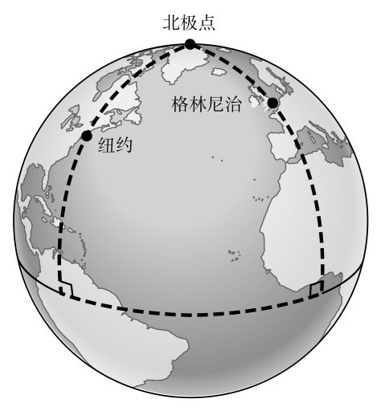
图11-3 地球上的三角形：内角之和大于180度
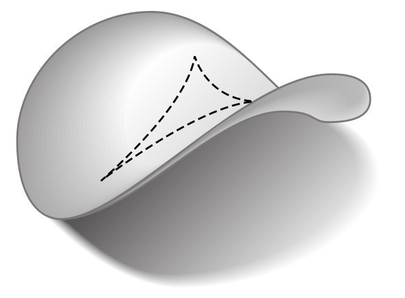
图11-4 品客薯片上的三角形：内角之和小于180度
可以这么想。想象一个曲率为零、没有边的面，这很直观，比如将书的这一页平摊在桌子上，让它向各个方向无限延伸出去。如果我们生活在这样一个面上，沿一条直线向任意方向走，将永远也走不到边缘。与此类似，我们也有一个显而易见的例子展示一个具有正曲率且没有边的曲面，那就是球面。如果我们生活在球面上，就可以一直朝一个方向走下去，永远不会到达边缘。（当然，我们确实生活在一个近似的球体上。如果地球是完全平滑的，没有海洋或山脉阻挡，我们开始这样走，最终会回到出发点，然后继续这样绕圈。）
那么负曲率且没有边缘的面是什么样子的？它不可能像一片薯片，因为如果我们生活在一个地球大小的薯片上，朝一个方向走，最终总是会从上面掉下来。长期以来，数学家一直想知道“无边”的双曲面是什么样的。在这样一个曲面上，我们想走多远就走多远，永远不会走到它的尽头，它也不会失去双曲的特征。我们知道它一定到处都像薯片一样弯曲，那么把很多薯片粘在一起怎么样？很遗憾，这行不通，因为薯片无法整齐地拼在一起，而如果我们用另一种表面填补那些空隙，那么新的区域就不会是双曲面了。也就是说，薯片只能让我们设想出一个部分具有双曲性质的区域。一个永远延伸出去的双曲面非常难以想象，许多最聪明的数学家竭尽全力也没能做到。
球面和双曲面在数学上是截然相反的，这里有一个实际的例子来说明原因。从一个球面上，比如一个篮球上，切下一块，当我们把这一小块放在地上压平时，它要么会被拉伸，要么会裂开，因为没有足够的材料让它以一种平整的方式展开。现在想象一下我们有一片橡胶的“薯片”。当我们试图把它平放在地上时，橡胶薯片会有多余的部分折叠起来。球面是闭合的，而双曲面会扩张。
让我们回到平行公设，它为我们提供了一种非常简洁的方法来给平面、球面和双曲面分类。
对于任何给定的直线和直线外的一点：
在平面上，有且只有一条平行线通过那一点。
在球面上，没有平行线通过那一点。 [1]
在双曲面上，有无限多条平行线通过那一点。
我们可以直观地理解平行线在平面或球面上的行为，因为我们可以很容易地想象出一个永远延伸的平面，而且我们都知道什么是球面。理解双曲面上平行线的行为更有挑战性，因为我们还不清楚当双曲面延伸到无穷远时，这种曲面可能是什么样子。双曲空间中的平行线会相距越来越远。它们不会弯曲，因为要使两条线平行，它们必须是直线，但它们会向不同方向延伸，因为双曲面本身会不断弯曲，曲面弯曲得越明显，它在任意两条平行线之间创造出的空间就越大。同样，这个想法完全令人难以置信。尽管黎曼天赋异禀，但他并没有想到一个具有他所描述的特性的曲面，这也并不奇怪。
在19世纪的最后几十年间，想象双曲面的挑战激发了许多数学家的斗志。亨利·庞加莱的一次尝试引起了M. C. 埃舍尔的注意，埃舍尔著名的木刻版画《圆极限》系列就受到了庞加莱的双曲面“圆盘模型”的启发。在《圆极限IV》中，圆盘上包含一个二维宇宙，越接近圆周，天使和魔鬼的图案就越小。然而，天使和魔鬼并没有意识到它们在变小，因为随着它们缩小，它们的测量工具也在变小。对这些圆盘上的“居民”来说，它们的大小一直不变，而它们的宇宙会一直存在下去。
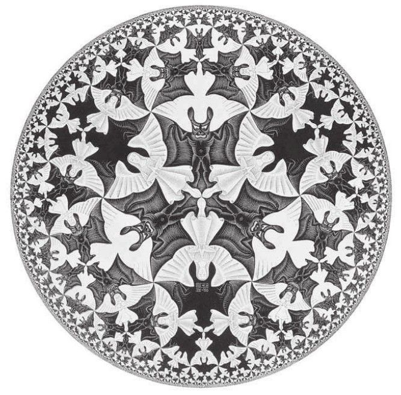
图11-5 《圆极限IV》
庞加莱的圆盘模型的巧妙之处在于，它完美地展示了平行线在双曲空间中的行为。首先，我们需要弄清楚圆盘中的直线是什么。就像球面上的直线在平面地图上看起来是弯曲的（例如，飞机航线是直线，但在地图上看起来是弯曲的）一样，圆盘世界中的直线看上去也是弯曲的。庞加莱将圆盘中的直线定义为，以直角进入圆盘的圆的一部分。图11-6中的（a）显示了A和B之间的直线，找到穿过A和B并以直角进入圆盘的圆，这条直线就形成了。平行公设的双曲版本是，对于所有直线L和直线外的一点P，有无数条平行于L的直线通过点P。这如图（b）所示，我在图（b）中标出了三条直线，分别是L’、L’’和L’’’，它们都通过P点，且都与L平行（如果两条直线永不相交，则这两条线是平行的）。L’、L’’和L’’’是以直角进入圆盘的不同圆的一部分。通过研究圆盘，我们现在可以看到，有无限多条平行于L的直线通过点P，因为我们可以画出无限多个圆，这些圆都以直角进入圆盘，并且都通过P。庞加莱的模型同样有助于我们理解两条平行线的发散：L和L’互相平行，但越靠近圆盘的周边部分，两者之间的距离就越来越远。
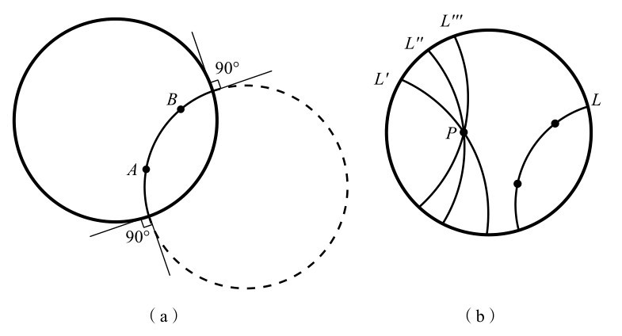
图11-6 圆盘中的直线
庞加莱的圆盘世界极具启发性，但仅仅在一定程度上如此。虽然通过一种相当奇怪的透镜扭曲变形后，它为我们提供了一个双曲空间的概念模型，但它并没有真正揭示出双曲面在我们的世界中究竟是什么样子的。在19世纪的最后几十年中，人们似乎马上就要找到更贴近真实的双曲模型了，但到了1901年，德国数学家大卫·希尔伯特（David Hilbert）彻底浇灭了这个希望。希尔伯特证明，用公式描述双曲面是不可能的。数学界无可奈何地接受了希尔伯特的证明，因为他们认为，如果没有办法用公式来描述这样一个面，那么这样的面一定不存在。人们就这样放弃了提出双曲面模型的想法。
让我们说回达伊纳·泰米纳，我在南岸见到了她。伦敦的南岸是一个河滨步道，这里有剧院、美术馆和电影院。她向我简要介绍了双曲空间的历史，这是她在康奈尔大学兼任副教授期间教授的一门课。她说，希尔伯特证明双曲空间不能由公式表示，带来的结果之一是，计算机无法生成双曲面的图像，因为计算机只能根据公式构建出图像。但是，20世纪70年代，几何学家威廉·瑟斯顿（William Thurston）发现，一种不需要很高技术的方法更有成效。他提出，你不需要公式就能创建双曲模型，只需要纸和剪刀就可以了。瑟斯顿在1981年被授予菲尔兹奖（数学中的最高奖项），他现在是达伊纳在康奈尔大学的同事，他想出了一个模型，用马蹄形的纸片粘在一起就能做成。
达伊纳用瑟斯顿的模型给她的学生展示过，但这个模型太脆弱了，总是散架，她每次都要做一个新的。“我讨厌粘纸，这让我抓狂。”她说。然后她灵机一动：如果能用针织的方式织出一个双曲面的模型呢？
她的想法很简单：先织第一行，然后在后面的每一行中，在前一行的针数的基础上相应增加固定比例的针数。例如，在前一行每两针的基础上增加一针。这样的话，如果你从第一行20针开始，第二行将有30针（加了10针），第三行会有45针（加15针），以此类推。（第四行应该多加22.5针，但既然不能织半针，你就得舍入成整数。）她希望这样能创造出一块越来越宽的织物，就像以双曲面的方式展开一样。但这样的针织很麻烦，因为任何一步错了，她就需要把一整行拆开，所以她把针织换成了钩针。有了钩针，就不用再拆开了，因为一次只会织上去一针。她很快就掌握了诀窍。达伊纳是名手工达人，因为在20世纪60年代，她曾在当时属于苏联的拉脱维亚度过童年。
在第一个钩针模型里，她在前一行每两针的基础上增加一针，但结果却得到了一块有许多紧密褶皱的成品。“它太卷曲了。”她说，“我看不清是怎么回事。”因此在第二次尝试时，她改变了比例，只在前一行每五针的基础上加一针。结果比她预期的要好，这个作品现在可以以恰当的方式自发弯折。她很快上手，沿着直线在这片不断延伸的面上翻飞，很快看到了分离的平行线。“这是我一直想看到的现象。”她笑着说，“我很兴奋。用我的手做出了一些电脑做不出的东西，真让人激动。”
达伊纳给她丈夫看了双曲钩针模型，他也很兴奋。戴维·亨德森（David Henderson）是康奈尔大学的几何学教授。他的专长是拓扑学，达伊纳说自己对拓扑学一无所知。戴维向她解释，拓扑学家早就知道，在双曲面上画一个八边形时，它可以折叠成一条裤子的形状。“我们必须得把那个八边形构建出来！”他告诉她，而他们也确实做到了。“以前没人见过‘双曲裤’！”达伊纳大声说道，她打开随身携带的运动包，拿出一个用钩针编织的双曲八边形，把它折起来给我看这个模型。它看起来像一条非常可爱的幼儿羊毛短裤：
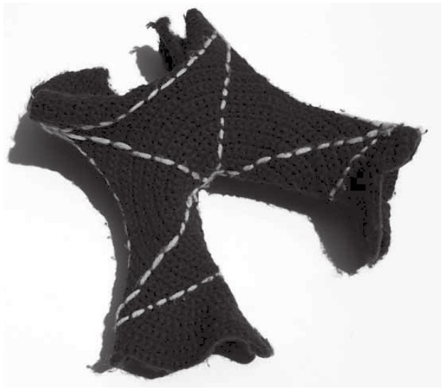
图11-7 钩针编织的双曲八边形
达伊纳的针线作品在康奈尔大学数学系里传开了。她告诉我，她把模型给了一个研究双曲面的同事看。“他看着模型，开始把玩。然后他面露喜色。‘这就是极限圆的样子！’他说。”他发现了一类他以前无法想象出的非常复杂的曲线。“他的整个职业生涯都在写关于这些东西的论文。”达伊纳补充道，“但它们一直在他的想象中。”
毫不夸张地说，达伊纳的双曲模型为这个非常困难的数学领域提供了重要的新见解。它们可以帮助人们通过本能来体验双曲面，让学生能够触摸并感受到一个面，而这种面以前只能以抽象的方式理解。这类模型并不完美，一个问题是，织物的厚度使得钩针模型仅仅是大致近似于理论上完全光滑的表面。尽管如此，它们比品客薯片更通用，也更精确。如果一件双曲钩针织物有无数行，理论上来说，我们就有可能生活在这个表面上，永远朝着一个方向走下去，不会走到边缘。
达伊纳的模型的魅力之一在于，对于以如此形式化的方法构想出的东西来说，它们竟然看起来像某些生物。当每行针的数量增加得相对很小时，模型看起来像羽衣甘蓝的叶子。当增加量更大时，模型会自然地折叠成一块一块的，看起来就像珊瑚。事实上，达伊纳来到伦敦就是为了“双曲钩针珊瑚礁”的开幕式，这是一个以她的模型为灵感的展览，希望提高人们保护海洋的意识。由于她的创新，她在不知不觉中引发了一场全球的钩针运动。
在过去的10年间，达伊纳已经做出了100多个双曲模型。她把其中最大的一个带到了伦敦，这个模型是粉红色的，用5.5千米长的纱线制成，重4.5千克，花了她6个月的时间才完成。做这么大的钩针织物是一次严峻的考验。“随着它越变越大，转动它需要花很多力气。”这个模型的一个显著特点是，它的表面积很大，足有3.2平方米，是达伊纳本人的两倍。双曲面会以最小的体积使面积最大化，这就是为什么它们会受到一些植物和海洋生物的青睐。当一个生物需要很大的表面积来吸收营养时（如珊瑚），它就会以一种双曲面的方式生长。
如果达伊纳是位男士，她不太可能想出双曲钩针的主意，也不会发明出这件在数学文化史上引人注目的手工制品。在数学的文化史上，女性一直不被重视。事实上，钩针只是近年来传统女性手艺品启发数学家探索新技术的一个例子。现在，与数学相关的钩针和编织、被子制作、刺绣、纺织，都被归为数学和纤维艺术这个学科中。
双曲空间最初被构想出来时，似乎违背了我们对现实的感觉，但如今，它已经被认为与平面或球面一样“真实”。每个面都有自己的几何特性，我们需要选择最适用的那种，正如亨利·庞加莱说过的那样：“一种几何不会比另一种更真实，它只会更方便。”例如，欧几里得几何最适合带着尺子、圆规和平整的纸的小学生，而球面几何最适合为飞行员在飞行途中导航。
物理学家也很想知道，哪种几何最适用于他们。黎曼关于面的曲率的想法，为爱因斯坦提供了实现他最大突破的工具。牛顿体系的物理学理论假设空间是符合欧几里得几何的，或者说是平直的。但爱因斯坦的广义相对论指出，时空（三维空间加上被视为第四维的时间）的几何不是平的，而是弯曲的。1919年，一支英国科考队前往巴西东北部的小镇索布拉尔，在日食中拍摄了太阳后面的恒星的照片，发现它们与实际位置略有偏差。爱因斯坦的理论解释了这一现象：恒星发出的光在到达地球之前，在太阳周围会产生弯曲。我们只能在三维空间中观察，在三维空间中，光似乎在太阳周围弯曲，但实际上，从时空弯曲的几何上来说，它仍然在沿着一条直线前进。爱因斯坦的理论准确地预测了恒星的位置，这一事实证明他的广义相对论是正确的，这也让他成了全球瞩目的著名科学家。伦敦《泰晤士报》发表了标题为《科学中的革命，宇宙的新理论，牛顿体系的思想被推翻》的文章。
爱因斯坦关注时空，他发现时空是弯曲的。如果不把时间看作一个维度，那么我们的宇宙的曲率是多少呢？为了找到哪种几何在这种巨大的尺度上最适合描述我们的三维空间，我们需要了解直线和形状在超大距离上的行为。科学家希望能从2009年5月发射的“普朗克”卫星收集的数据中发现这一点。普朗克卫星测量的是宇宙背景辐射，也就是所谓的“大爆炸的余辉”，该卫星的分辨率和灵敏度比以往都要高。一些成熟的观点认为，宇宙要么是平的，要么是球形的，但宇宙也有可能呈双曲形状。一个原本被认为是无稽之谈的几何模型，实际上可能反映了事物的真实面貌，这真是有些讽刺。
就在数学家探索非欧几里得空间的反直觉领域时，一个人颠覆了我们对另一个数学概念——无穷大的理解。格奥尔格·康托尔是德国哈雷大学的讲师，在那里，他发展出了一种开拓性的数论，在这个理论中，无穷大可以有大有小。康托尔的想法完全有悖于正统，最初引来了许多同行的奚落。例如，亨利·庞加莱将康托尔的研究称为“一种疾病，一种有朝一日数学会治愈的病态”，而康托尔此前的老师、柏林大学数学教授利奥波德·克罗内克（Leopold Kronecker）则斥责康托尔是“冒充内行的骗子”和“年轻的腐化者”。
1884年，可能是由于这场骂战的缘故，39岁的康托尔精神崩溃，他因心理健康问题住院治疗，而后又出现了很多次这样的情况。戴维·福斯特·华莱士（David Foster Wallace）在有关康托尔的书《跳跃的无穷》（Everything and More）中写道：“这位患有心理疾病的数学家现在在某些方面似乎和其他时代的游侠骑士、受辱的圣人、受尽折磨的艺术家和疯狂的科学家一样，他可以说是我们的普罗米修斯，前往禁地，带着礼物回来，这些礼物我们都用得上，但只有他一个人付出了代价。”文学和电影会把数学和精神错乱之间的联系浪漫化，这符合好莱坞剧本的叙事要求（典型代表就是《美丽心灵》），但这当然是一种不公平的概括。这种伟大数学家的原型可能来自康托尔。他特别符合这种刻板印象，因为他在努力研究无穷大，一个联系了数学、哲学和宗教的概念。他不仅挑战着数学理论，还提出了一种全新的知识理论，在他心目中，这也是人类对上帝的一种全新理解。难怪他惹恼了好些人。
无穷大是数学中最令人困扰的概念之一。我们在探讨芝诺悖论时提到，设想无穷多个不断减少的距离充满了许多数学和哲学上的陷阱。古希腊人会尽量回避无穷大。欧几里得用否定来表达无穷大的思想。比如，他通过证明不存在最大的素数来证明存在无穷多个素数。古代人不愿把无穷大看作一个独立的概念，这就是为什么芝诺悖论中的无穷级数对他们来说如此麻烦。
17世纪时，数学家已经接受涉及无穷多个步骤的运算了。约翰·沃利斯在1655年引入了无穷的符号∞，来研究无穷小（越来越小，直到无限小的事物），这为艾萨克·牛顿的微积分铺平了道路。人们发现了包含无穷多项的等式，比如π/4=1-1/3+1/5-1/7+…这表明，无穷不是敌人。但即使如此，仍然需要以谨慎而怀疑的态度对待它。1831年，高斯提出了一个被大多数人接受的看法，他认为无穷“仅仅是一种表述”，说的是一种从未达到的极限，是一种简洁地表达一直继续下去的想法。而康托尔的思想之所以被看作异端邪说，是因为它把无穷本身视为一个实体。
康托尔之前的数学家之所以不想把无穷大和其他数字同等对待，是因为这其中包含了许多难题，其中最著名的一个是伽利略在《两种新科学》中写到的，它被称为伽利略悖论：
1. 有些正整数是平方数，比如1、4、9和16，有些不是平方数，比如2、3、5、6、7等。
2. 所有正整数的总数一定大于平方数的总数，因为所有正整数包括了平方数和非平方数。
3. 但是对于每个正整数而言，我们可以找出和它们的平方之间的一一对应关系，例如：
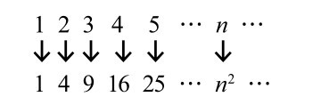
4. 所以，实际上平方数和正整数一样多。这就出现了一个矛盾，因为我们在第二点中说过，正整数比平方数多。
伽利略的结论是，当谈到无穷大时，“大于”、“等于”和“小于”这些数字概念都没有意义。在讨论有限量时，这些术语可能是可以理解的，也是合乎逻辑的，但对于无穷大则不然。因为正整数和平方数的总数都是无穷多的，所以无论是说正整数多于平方数，还是说正整数和平方数的数量相等，都没有意义。
格奥尔格·康托尔设计了一种新的方法来思考无穷大，这使得伽利略悖论变得多余。康托尔认为，与其思考单个数字，不如思考数字的集合，也就是数字的“集”。一个集的基数指集合中数字成员的个数。所以{1，2，3}这个集的基数为3，而{17，29，5，14}的基数为4。康托尔的“集合论”在考虑具有无穷多个成员的集合时，会产生令人十分激动的结果。他引入了一个新的无穷大符号
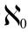
（读作aleph-null），用希伯来语字母表中的第一个字母加下标0表示自然数集的基数，也就是{1，2，3，4，5，…}。每个成员都与自然数一一对应的集，其基数也是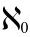
。对于平方数集{1，4，9，16，25，…}，由于其与自然数也一一对应，所以它的基数也为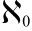
。同样，奇数集{1，3，5，7，9，…}、素数集{2，3，5，7，11，…}和数字中带有666的数集{666，1666，2666，3666，…}的基数都是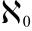
。如果你有一个集，它有无穷多个成员，你一个一个地数，如果最终每个数字都能数到，那么这个集的基数也是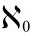
。因此，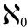
也被称为“可数无穷”。这之所以令人兴奋，是因为康托尔证明，我们可以把它扩展得更大，而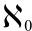
只是康托尔的无穷大家族中的婴儿。下面我将向你介绍一个大于
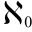
的无穷大，据说大卫·希尔伯特在他的演讲中用过这个故事，它讲的是一个有着可数无穷（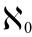
）个房间的旅店。这个著名的设施深受数学家的喜爱，有时被称为希尔伯特酒店。在希尔伯特酒店里，有无穷多个房间，它们的编号是1，2，3，4，…。一天，一位旅客来到接待处，发现旅店客满了。他问有没有办法给他找个房间。接待员回答说，当然有办法！管理层需要做的就是，按照以下方式将客人重新分配到不同的房间：将1号房间的客人转移到2号房间，将2号房间的客人转移到3号房间，以此类推，也就是把n号房间的人都转移到n+1号房间。如果这么做，那么每位客人仍然有一间房间，且1号房间将腾出来接待新来的客人。完美！
第二天，一个更复杂的情况出现了。一辆大巴车到了，车上的所有乘客都需要入住。这辆大巴车有无穷多个座位，编号为1，2，3，…，所有座位上都坐了人。有没有办法为每位乘客都找到一间房？也就是说，即使酒店客满，接待员能否将客人重新安排到不同的房间，从而为大巴车的乘客留下无穷多的空房间？别担心，有解决办法。这一次，管理层需要做的就是把每位客人转移到编码是他原来住的房间的两倍的房间里，也就是2，4，6，8，…号房间。这样所有奇数号的房间都空了，大巴乘客可以入住这些房间。1号座位的乘客得到1号房间，也就是第一个奇数，2号座位的乘客得到3号房间，就是第二个奇数，以此类推。
第三天，有更多大巴车来到了希尔伯特酒店。事实上，有无穷多辆大巴车到达了。大巴车在外面排着队，1号大巴挨着2号，2号挨着3号，等等。每辆大巴车的乘客人数有无穷多，就像前一天到达的那辆车一样。而且，每位乘客都需要房间。有没有办法让每辆大巴车上的每一位乘客都在（已经客满的）希尔伯特酒店得到一间房？
没问题，接待员说。首先，他需要清理出无限多个房间。他用了前一天使用的方法——让每个人都搬到房间号码变成两倍的房间里。这样，所有号码是奇数的房间都空了出来。为了满足无穷多的长途大巴上的乘客，他要找到一种数出所有乘客的办法，因为一旦找到了一种方法，他就可以把第一位乘客分配到1号房间，把第二位乘客分配到3号房间，把第三位乘客分配到5号房间，以此类推。
他是这样做的：每辆巴士都按座位列出了乘客，如图11-8所示。因此，每位乘客都可以用m/n表示，其中m是他们乘坐的巴士的号码，而n是他们的座位号。如果我们从第一辆巴士的第一个座位上的乘客（乘客1/1）起，按照如图11-8所示的“之”字形路线数乘客，第二个人是第一辆巴士的第二个座位上的乘客（1/2），第三个人是第二辆巴士上的第一位乘客（2/1），我们最终就能数出所有乘客。
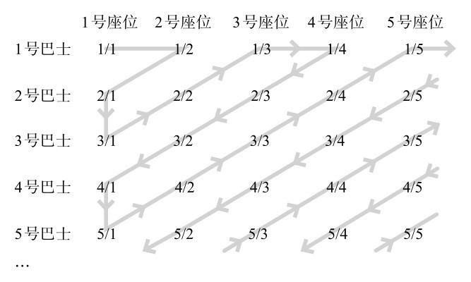
图11-8 给无穷多辆巴士上的乘客编号的方法
现在，让我们将希尔伯特酒店的故事转化为一些数学表达式：
一个人被分配到了一间房，这相当于
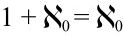
可数无穷多的人都被分配到了房间，我们得到：
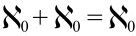
有可数无穷多的巴士，每辆车上有可数无穷多的乘客，他们都能分配到房间，这就可以表示为
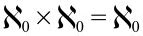
这些就是无穷大所具有的性质：无穷大加上无穷大，就得到无穷大；而无穷大乘以无穷大，也得到无穷大。
让我们在这里停一下。我们取得了一个惊人的结果。回头再看看座位和巴士的表格，并把每位表示为m/n的乘客看作分数m/n。无限扩展后，这个表格将涵盖每一个正分数，因为正分数也可以定义成所有自然数m和n构成的m/n。例如，分数5628/785位于第5628行和第785列。因此，数出每辆公共汽车上的每一位乘客所用的“之”字形计数法，也可以用来数出所有正分数。也就是说，所有正分数的集和自然数的集具有相同的基数，那就是
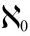
。从直觉上来说，分数似乎应该比自然数更多，因为任何两个自然数之间都有无数个分数，但康托尔发现，我们的直觉是错误的，正分数和自然数一样多。（事实上，正分数、负分数加起来也和自然数一样多，因为有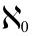
个正分数和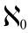
个负分数，如上所示，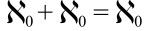
。）我们可以通过数轴来理解这个结果有多奇怪，这种方法通过将数字看作线上的点来理解数字。下图就是一条从0开始，直到无穷大的数轴。
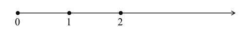
每个正分数都可以看作数轴上的一个点。在上一章中我们说到，0和1之间有无数个分数，1和2之间，或者其他任何两个数之间都一样。现在，想象着用显微镜对准直线，这样你就可以看到代表着分数1/100和2/100的两个点。就像之前所说的，在这两个点之间有无数个代表分数的点。事实上，无论你把显微镜对准哪里，无论你的显微镜能看到两点之间多小的间隔，在这样一个间隔里，总会有无数个代表分数的点。无论你看向何处，都有无限多个点代表分数。因此，得知事实上，在一个毫无遗漏的有序列表中数出分数是可能的，真是令人惊讶。
现在让我们来步入正题，那就是证明存在大于
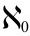
的基数。我们回到希尔伯特酒店的问题，在这种情况下，酒店一开始是空的，然后有无数人出现，等待分配房间。但这一次，旅客们并没有乘坐巴士前来，他们实际上是一群“乌合之众”，每人都穿着一件短袖衫，上面写着从0到1之间的一个小数。没有两个人衣服上的小数是相同的，它们涵盖了0到1之间的每一个小数。（当然，小数展开有无限长，因此需要无限宽的短袖衫才能将它们写出来，但既然我们已经想象了一家拥有无数房间的酒店，想象一下这些短袖衫也不是太过分的要求。）一些到达的客人冲向接待处，询问酒店是否有办法为他们提供住宿。接待员需要找到一种方法，列出0到1之间的每一个小数，因为一旦他列出来了，他就可以给所有人分配房间。这似乎是一个公平的挑战，毕竟，他能够找到一种列出无数辆巴士上的无数乘客的方法。然而，这个任务却十分艰难。我们不可能像之前一样，在一个有序列表中将0到1之间的每一个小数列出来。为了证明这一点，我会证明，对于0到1之间的每一个包含无数个数的列表，总会找到一个0到1之间的数不在列表中。
过程是这样的。让我们想象一下，第一个到达的人穿着短袖衫，小数展开是0.6429657…，第二个人是0.0196012…，接待员为他们分别分配了1号和2号房间。假设接待员继续给其他到来的人分配房间，从而创建了一个无穷的列表（记住，每个小数都将一直展开下去），列表前几项是：
1号房间 0.6429657…
2号房间 0.0196012…
3号房间 0.9981562…
4号房间 0.7642178…
5号房间 0.6097856…
6号房间 0.5273611…
7号房间 0.3002981…
…号房间 0.……
…… ……
正如前面所说，我们的目标是找到一个0到1之间不在这个列表里的小数。我们用下面的方法来完成。首先构造一个数，它的第一位小数取1号房间中小数的第一位，它的第二位小数取2号房间中小数的第二位，第三位小数则取3号房间中小数的第三位，以此类推。换句话说，我们选择的是带下划线的数字：
0.6 429657…
0.01 96012…
0.998 1562…
0.7642 178…
0.60978 56…
0.527361 1…
0.3002981 …
那么这个数就是：
0.6182811…
我们就快完成任务了。我们现在要做最后一件事，就是让我们的数不在接待员列表上。我们来改变这个数中的每一位数字，比如在每位数字上加1，这样一来，6就变成了7，1变成2，8变成9，等等，这个数就变成了0.7293922…。
现在我们得到了最终的结果，这个小数展开后就是我们正在寻找的例外。它不在接待员的列表上，因为我们构建它的方式就让它不会与已有的任何数重合。这个数不在1号房间里，因为它的第一位小数与1号房间中数字的第一位不同。它也不在2号房间里，因为它的第二位小数和2号房间的数字的第二位不一样。我们可以继续下去，这个号码不会在任何一间n号房间内，因为它的第n位小数不同于n号房间的小数展开后的第n位数字。因此，我们得到的小数0.7293922…不可能等于任何被分配了房间的小数，因为它总是与分配到这一间房间的数的小数展开至少在一位小数上存在差异。列表中很可能有一个数，它的前7位小数是0.7293922，但如果这个数在列表中，那么它在后面的小数展开中将与我们得到的数相差至少一位小数。也就是说，即使接待员一直不停分配房间，他也找不到一间房来迎接这样一位客人，他的短袖衫上写着我们从0.7293922开始构建的数。
我构建的列表以随意选择的0.6429657…和0.0196012…两个数为首，同样，我也可以选择一个以其他任意数字开头的列表。对于每一个有可能的列表，总是可以用“对角线”方法构建出一个不在列表中的数。希尔伯特酒店可能有无数间房间，但它却无法容纳由0到1之间的小数定义的无穷多的人。总会有人会被拒之门外，这家旅馆并不够大。
康托尔对这个大于自然数的无穷大的无穷大的发现是19世纪最伟大的数学突破之一。这个结果令人震惊，而它的部分作用在于，这个结果确实很容易解释：一些无穷大是可数的，它们的大小是
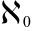
，而有些无穷大是不可数的，因此更大。这些不可数的无穷大又有许多不同的大小。最容易理解的不可数的无穷大被称为c，它就是到达希尔伯特酒店的人数，这些人穿着短袖衫，上面包含了0到1之间的所有小数。同样，通过观察c在数轴上的含义来理解c也很有启发性。每一个人的短袖衫上的小数都在0和1之间，它们也可以被理解为0和1之间的一个点。使用c来表示是因为它代表一条数轴上的点的“连续统”（continuum）。
这里我们会看到另一个奇怪的结果。我们知道在0和1之间有c个点，但是我们知道在数轴上总共有
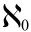
个分数。我们已经证明了c大于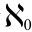
，所以在数轴上0到1之间的点，一定比整条数轴上代表分数的点要多。康托尔又一次把我们带到了一个非常反直觉的世界。分数虽然在数量上是无限的，但它们只占数轴上非常小的一部分。它们在数轴上的分布比组成数轴的其他类型的数要稀疏得多，而其他那些数就是无法用分数表示的数，也就是我们的老朋友无理数。结果表明，无理数在数轴上的分布非常密集，在数轴上任何有限的区间内的无理数比数轴上的所有分数都要多。
我们在上面介绍过，c表示数轴上0到1之间的点的个数。那么在0到2之间，或者0到100之间有多少个点呢？还是c个点。事实上，在数轴上任何两点之间，无论它们离得有多远或者多近，都有c个点。更令人惊讶的是，整个数轴上的点的总数也是c，这可以通过以下过程来证明，方法是证明位于0和1之间的点和位于整个数轴上的点之间存在一一对应的关系。通过将数轴上的所有点与0到1之间的点配对，就可以完成证明。首先，在0和1的上方画一个半圆，见图11-9。这个半圆就像一位媒人，它帮助0和1之间的点与数轴上的点形成了配对关系。取数轴上的任意一点，将之标记为a，从a到圆心画一条直线。这条线与半圆相交于一点，这个交点与0到1之间的距离唯一：从这个点向下竖直画一条线与数轴相交，在数轴上的交点记为a’。我们可以用这种方法找到与每个标记为a的点对应的唯一的点a’。当我们选择的点a逐渐走向正无穷时，0和1之间的对应点则逐渐靠近1，当选择的点逐渐走向负无穷时，相应的点则向0靠拢。如果数轴上的每个点都可以与0到1之间的唯一一个点配对，且反过来也一样，那么数轴上的点的个数一定等于0到1之间点的个数。
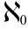
和c之间的差，就是数轴上代表所有数（包括分数和无理数）的点的数目，与代表所有分数的点的数目之间的差。但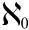
与c之间的差距太大了，如果我们从数轴上随机选取一个点，我们选到的数是分数的概率为0%。与不可数的无理数相比，分数的数量远远不足。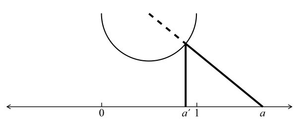
图11-9 通过半圆将0和1之间的点与整个数轴上的点一一配对
康托尔的想法一开始很难被接受，但他发明的
已经被证明是正确的。如今，这一结论不仅被普遍纳入数字领域，而且“之”字形和对角线的证明过程被普遍认为是整个数学中最精彩的证明之一。大卫·希尔伯特说：“在康托尔为我们创造的天堂里，没有人能把我们赶出去。”
不幸的是，康托尔为这个天堂牺牲了自己的精神健康。从第一次精神崩溃中恢复过来后，他开始关注其他学科，比如神学和伊丽莎白时代的历史，他坚信科学家弗朗西斯·培根才是莎士比亚的戏剧的真正作者。证明培根的作者身份成了他长期的奋斗目标，也是他越来越古怪的行为的集中体现。1911年，他在圣安德鲁斯学院发表了一次演讲。他本来是被邀请谈论数学的，但他却说起了对莎士比亚的看法，这让主办方十分尴尬。康托尔又出现了几次精神崩溃，他经常住院，于1918年去世。
康托尔是一位虔诚的路德宗教徒，他给牧师写了很多封信，谈到他的研究结果的意义。他相信，他对无穷大的理解表明，人类的头脑能够思考无穷大，从而可以使人更接近上帝。康托尔具有犹太血统，这可能是他选择字母
作为无穷大的符号的原因，他可能知道，在神秘的犹太传统卡巴拉
[2]
中，
代表着上帝的和谐。康托尔说，他很自豪他选择了
，因为作为希伯来语字母表的第一个字母，它完美地象征着一个新的开始。
也是我们旅程的一个完美的终点。我在这本书中最开始的几章中写到，数学的出现，代表了人类希望理解自己所处的环境的愿望。通过在木头上刻下凹槽，或用手指数数，我们的祖先发明了数字。学会计数对农业和贸易都很有帮助，并将我们带入了“文明”。后来，随着数学的发展，这门学科越来越少地关注真实的事物，而更多地转向抽象的事物。古希腊人引入了点和线等概念，而印度人发明了零，它们都为更彻底的抽象打开了大门，比如负数。虽然这些概念最初违背了直觉，但它们很快就被理解了，我们现在每天都在使用。然而，到了19世纪末，把数学和我们自身经验联系起来的脐带彻底断了。在黎曼和康托尔之后，数学与任何对世界的直觉理解都不再有联系。
在找到c之后，康托尔没有停下脚步，他想证明还有更大的无穷大。如我们所见，c是一条线上所有的点数。它也等于二维面上所有的点数。（这是另一个令人惊讶的结果，你一定要相信我。）让我们把二维面上可绘制出的所有可能的直线、曲线和波浪线的数目称为d。（这些线条、曲线和波浪线既可以是连续的，可以理解成没有把笔从纸上拿开画出来的，也可以是不连续的，也就是笔至少提起过一次，在同一条线之间留有间隙。）利用集合论，我们可以证明d比c大，而且我们可以进一步推测，一定有一个大于d的无穷大，但迄今为止还没有人能够找到一个基数大于d的由自然事物组成的集。
康托尔带领我们超越了想象。这是一个相当美妙的地方，与我在这本书开头提到的亚马孙部落的情况正好相反。蒙杜鲁库人有很多东西，但没有足够的数字来计算。康托尔给我们提供了我们想要的数字，但是我们已经没有足够的东西可以计算了。
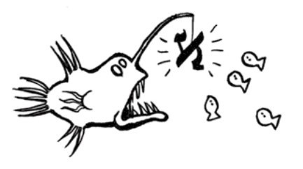
[1] 你可能会认为，纬线与赤道平行。这不对，因为除赤道外的纬线并不是直线，而只有直线可以相互平行。直线是两点之间的最短距离，这就解释了为什么尽管纽约和马德里位于相同的纬度上，但往返两地的飞机并不是沿着纬度线飞行，而是沿着一条在二维地图上看起来是弯曲的路径飞行。
[2] 卡巴拉指一种犹太神秘主义。——译者注